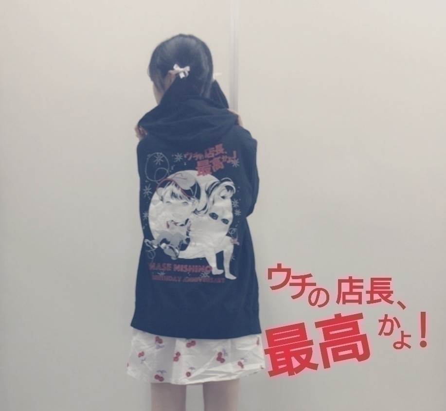
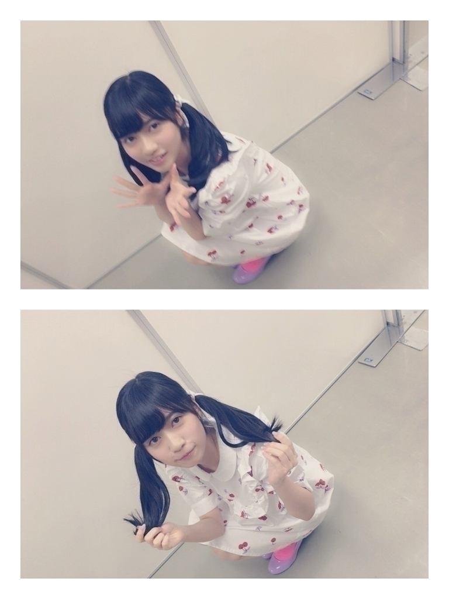

2016/0625Sat一瞬の
おはようございます！
こんにちは
こんばんは
らんぜの勢い
止まらんぜーーーーー！
寺田蘭世です
宜しくお願い致します！
夏ですね
外の空気の質感と香りが
夏を感じさせます
皆さんは夏の香り分かりますかね？
どう表現したらいいのか
わからないのですが
季節ごと香りってあるよね
私は春の香りを嗅ぐと
ドキドキザワザワします
これ、私だけかな(> <)
まぁ、そろそろお洋服もガッツリ衣替えしなきゃですね
《注意》
すみませんこの先結構前の話になります書き溜めておいたブログ達です。個別握手会で着たお洋服の紹介ブログをなかなかアップ出来てなかったので、、、すみません宜しくお願い致しますm(._.)m
《個別握手会in千葉》
ありがとうございました
以前のブログに書きましたが
握手会は直接顔を見て話せるから好きです
やっぱり今の時代
インターネットで何でも出来るから
直接会わないで
メールとか電話
私達の場合はモバメやブログのコメント欄とかでも
意見の交わし合いはできるけど
表情が見えない、、、
でも、握手会はその瞬間瞬間に色んな感情があって
それが目に見えるから
安心するし
お互い意思疎通できている気がしてます
だから、私は握手会が大好きです
皆の1部のちょっと眠そうなお顔
笑ったお顔
真剣に話してくれるお顔
泣きそうなお顔
ラストの部での
今日はありがとうの言い合い
全部全部好きです！
《髪型》
1部：ストレート
2部：猫耳風
3部：ゆるめ巻きおろし
4部：高めのツインテール
《お洋服》
1部：猫柄のワンピース
2部：猫柄のワンピース
3部：Cherry柄のワンピース
4部：Cherry柄のワンピース
西野さんの生誕パーカー
5部はせっかく頂いたので急遽着させて頂きました
西野さんの生誕パーカーとキャップ
ありがとうございます！

ピザハットさんのwebＣMで新人店員で出させて頂いたこと、、、m(._.)m
有りがたく思います
乃木坂店は閉店するらしいのですが
すごくいい経験になりました！
西野さんと2人でお仕事出来たこともそうですが
はじめてCM撮影の現場を経験出来たことも良かったなって思います！
ありがとうございました！
撮影：和田まあやさん
4部私服：Candy Stripper さん
このお洋服はNOGIBINGOの収録のときも着ました！
キャンスパさんのSALEで買いました
半額くらいで買えました
我ながら自分買い物上手だと思うm(._.)m

1枚目ブレちゃったーっと言う事でもう1枚パシャリしてもらった
私の癒しはまあやさんだよ(^^)
そう言えば４６時間tvのカラオケ企画のまあやさんが面白すぎて
久々に笑い泣きしました
滅多に人前で大笑いすることないので
自分でもびっくりしました
今でも思い出すだけで
笑っちゃいます
昨日のブログに
私の事書いてくれてて
嬉しかった！
やっぱりまあやさんLOVE
この日は
かりんちゃんの生誕もありました！
もちろんお邪魔しました
凄くセンスの良き
生誕でしたかりんたんの好みがギュッと詰まってた(^^)
可愛いシールそしたらね
イタズラで生駒さんが
私のお尻に
いつの間にか貼っつけたらしい
気付かなかった、、、
だから生駒さんの名前シールも貼って3部は握手してました(^^)

1、2部は猫柄のワンピース

こんな感じでした
古着屋さんです
女の子にどこのお洋服ですかって最近良く聞いてもらうんだけど
ほとんど古着で参考になれないごめんね
でも、古着屋さんらんぜきっかけで行くようになったーって声が多くて
ビックリと嬉しさ(^^)
そして今回
15枚目シングルでは
初５部制になりました！
関東は５部制です
宜しくお願い致します
まず、本当に嬉しいです
楽しい時間が増えた事幸せに思います
ありがとうございます。
まだ、4部制の会場もあります
そこはやっぱり悔しい
でも、このちょっと悔しいくらいが丁度いいです。
本当は弱いのに
悔しいって気持ちの方が
燃えるタイプなので
これからもそれを原動力にし誰も歩いたことのない道を私が作りたい
それを真似されるくらいの
人になりたい。
でも、すごくすごく感謝してます
これをまず報告させてください！！
ちょっと前の私じゃ考えられません。
初めは2部くらいずつ
持たせて頂いて
それもまばらで列が何度も途切れることもありました
そこから1部制になり
悔しい思いもありました。
ずっと研究生として
活動してて
やりたい事、
夢
希望
沢山あったけど
何もできなくてもどかしい事がありました
17歳となった今
ようやくここに来ました
もちろん目指している場所はまだまだ遥か上にあります。
が、まずは感謝の気持ちを忘れず
今まで通り私らしくやりたいです。
こういった1つ1つも
皆で喜びたい！
ありがとうございます！
頑張るぞっ
これからも一緒に頑張ろうね
宜しくお願い致します！！！
そして、勝手ながら15枚目の個別握手会は
9月とか10月だから
生誕祭、、、
すでにワクワクしております(^^)
割といろんなメンバーの生誕祭にお邪魔してるのですが
あれ、すごく楽しいよね
年に一回の楽しみ
アイドルになって良かったって思う瞬間の
1つです(^^)
なんか、他の言葉が見当たらないので
いつもこんな事しか言えませんが
これからも宜しくお願い致します！
ありがとうございました！
横浜14枚目ラスト握手会は次のブログで書きます
話題遅れててごめんなさい
ブログをアップするの躊躇する癖を治したい
なんか、果たしてこんなブログで良いのかなとか
その他にも
色々とアワアワって
気にし過ぎて
アップするの緊張しちゃうんですm(._.)m
スーパービビリ
そして、もう1つ
アップするタイミングを損ねたブログがあるので
載せます
すぐ載せますm(._.)m
もう、ブログをアップする事を躊躇わないぞ
この流れから全く関係ないないのですが
タピオカ
タピオカ
誰か一緒に行ってくれる方
いらっしゃいますか？
タピオカ
タピオカ
本日はアルバム握手会です
なんのお衣装を着たのかは
また、追って書き書きします
今回は嫉妬の権利のお衣装絶対着るよ！
何色の着ようかな(^^)
お気をつけてお越しください！
ジメジメの季節
水分補給もお忘れなく！
2016/06/25 13:42


コメント(478)
シングルの時よりもちょっとゆっくり話せたかな？
また後ほどお邪魔します。
更新はらんぜのペースで大丈夫だぞ。
握手おつかれさまー
今日もかわいいね！
水分補給了解！らんぜも！
今度握手会行くからな！！
たった今幕張メッセ向かってます(笑)
なんの衣装着てるか楽しみ(((o(*ﾟ▽ﾟ*)o)))わくわく
タピオカ行く！
かわいい
がんばってねー
相変わらず可愛らしい、後前から思ってたけどツインテ凄い似合いますね♡
これからも、頑張って！
いま会場にいるから不思議な感じだけど、、、
これから行くね！
ブログ更新ありがとー!!
最近、頻繁にブログ更新してくれるから楽しみが増えたよー!!
握手会関東エリア５部制おめでとー!!
早く京都でも５部制になって欲しいなー!!
ではまた!!
蘭世の勢いとまらんぜ!!
きてくださいm(_ _)m
機会があったら、また握手しましょう(￣∀￣)b
空色のコウモリ☆★☆
.
蘭世推しになりそう！
2回目にしてようやく緊張せず喋れたよ( ´ ▽ ` )ﾉ
蘭世ありがとー次はちゃんとオススメのアニメ聞くから考えてて笑
次会う時まで身体も鍛えとくよ
15枚目個握もよろしく
しっかり見てるから頑張ってー(^o^)/
蘭世の服もめっちゃ好み＼(^o^)／
7/10が待ち遠しいね！
待っててね！
握手会には行けたことないけど部数が増えたこと僕もとても嬉しいです(^^)/
いつか行けるタイミングがあればいいな
タピオカ
タピオカ
タピオカ笑
次行くのは再来週なのでそれまで頑張ります！！
今握手会で忙しいのにブログアップありがとう(ノ´∀｀*)
しかも５月の個握のとかホントになつかしい！！！(*´-`)
らんぜも生駒ちゃんにイタズラのお返ししちゃいなよ～(。-∀-)
今日の千葉のアルバム個握は行けなくてごめんね(￣▽￣;)
次の横浜のアルバム個握には行くよーーー！！！
また話そーね(*´ω｀*)
春水堂ってとこのやつ！！！
抹茶豆乳タピオカ飲んだ〜(^o^)！！
ブログありがとう！
昨日ね、蘭世推しの人と一緒にお酒飲んだよ！
蘭世推しの知り合いが増えて凄く嬉しい！！
今日の握手会楽しんでね！！
俺は行けないんだ。。。（ ; ; ）かなしいたけ。。
早く会いたいよ！！
9月の握手会にはやくなれ！！
蘭世の勢い止まらんぜ＼(^o^)／
なかなかおじさん握手会参加できないで蘭世ちゃんに会えないよ。
出来るだけ参加して蘭世応援したいんだけどね^ ^
嫉妬の権利の衣装着るの＼(^o^)／
アンダー曲で1番好きな曲かも、嫉妬の権利が出るまで13日の金曜日とか扇風機、春のメロディーが好きだったけどね。
蘭世がフロントのせいも有るかも、もちろんボーダーも大好きだよ^ ^
ブログ躊躇したいでガンガン更新してくれるとおじさんは喜ぶよ！
蘭世ちゃんがブログ更新して無いかな、気になるから乃木坂のHPちょくちょく開くよ、多分皆そうだね（≧∇≦）
これ書き終わったらまた蘭世ちゃんのブログ待機だよ！
夏の夕立の降り始めの匂いが夏の匂いに感じるよ、バイクのシートが暑さでプラスチックの匂いも夏だな〜って、職業柄感じる匂いだね。
蘭世ちゃんのことガンガン応援するから頑張ってね。
更に蘭世勢い止まらんぜ＼(^o^)／
またね。
7月10日も行くね*\(^o^)/*
前の時コメント間違えたの！ごめんね。
タピオカ！タピオカ！
春水堂のタピオカおいしいよ！！( ´ ▽ ` )ﾉ
私服かわいい...！！
そしてわたしも古着好きだから
嬉しい！！！( ´ ▽ ` )ﾉ
お仕事ファイト！
乃木坂46を最近好きになって感じたこと
乃木坂46最高かよ！！
乃木坂好きが止まらんぜー！
今、乃木坂46の全曲を書き出してまとめてました。なんかそういう気分で(^w^)
最後に玲香ちゃん体調崩しちゃったみたいやね。らんぜちゃんも気を付けてね！！
いま蘭世の握手会ならんでるよ笑
緊張なう！
最近モバメも多めで嬉しいです！
早く15枚目の曲とか聞きたいし、蘭世のパフォーマンスもみたいなあ
そしてそして今日は握手会お疲れ様！
まだ続くと思うけどがんばって！！
タピオカタピオカっ！
止まらんぜーー！
盛り込みすぎ（笑）
あ、そっか、
生誕祭やね。
関東だといいなぁ、
今日はアルバムの、握手だね
バイトしてて行けないけど15枚目を楽しみにして
バイト頑張ってきまーす！！笑笑
無理しないでねっ！
５部制本当におめでとう！
らんぜの言う誰も歩いたことのない道を、
一緒に歩んでいきたい！
ブログありがとう！
寺田さんがブログあげてくれたら短くてもスーパー長くてもうれしいたけですよ
なにより寺田さんの文章とっても好きです
毎週NEWSがとまらんぜ何時にあがってくるかなーってわくわくしてます
生誕祭どこでやるのかわからなくて、
まだ個握買ってないよー( ´-`)
ちょっと遅れてしまうけど京都だったらいいな
今レーンに並んでます笑
お互い今日1日楽しみましょー！
蘭世の勢いがとまらんぜ！
今握手会に参加してます！
就職決まるまで我慢していてコメントでとにかく想いを書いていましたが
やっと参加できてるようになってきて直接話せるのが僕もすごい嬉しいです(^ー゜)
15枚目は横浜と京都に行きます！
京都は4部すべて行きます。
今日はアルバム個握なので歌衣装ですが、スデージでキラキラ輝く蘭世が目の前にいるので眩みました。
私服も最高に好きで最近古着屋に行くようになりました！
オススメあれば教えて欲しい(^ー゜)
では今日の握手会も楽しみましょ！
２部ではポピパッパーの衣装だって当てられなかったよー
この後もよろしくねー
タピオカ・・・最後に食べたの何年前だろ・・・そもそも食べたことあるのかすら怪しい・・・
文章にするのは難しいけども話すと伝わりやすいってこともあると思うし、表情がわかることで相手の気持ちがわかるってこともいいよね。
15thで初めて握手取ったから行くね〜
乃木坂の握手会自体行くのが初めてってこともあっていろいろ楽しみ。
初コメでした。
蘭世がアイドルとして見れて良かった。
期待しちょる。
コメントする